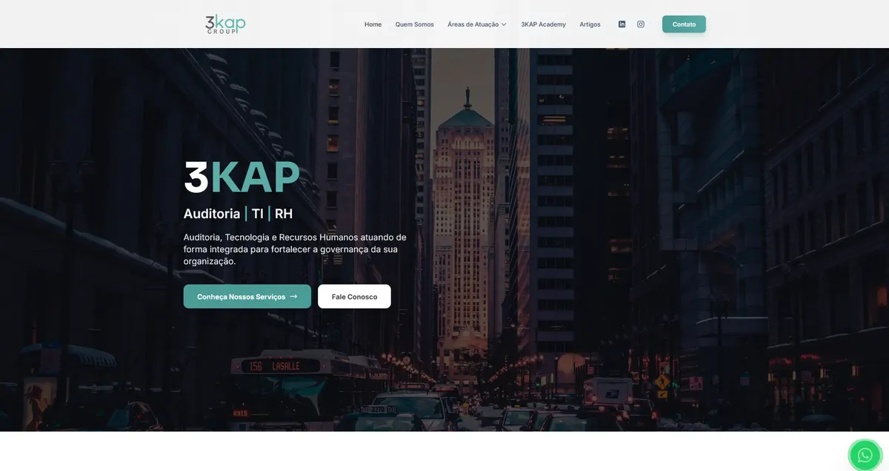
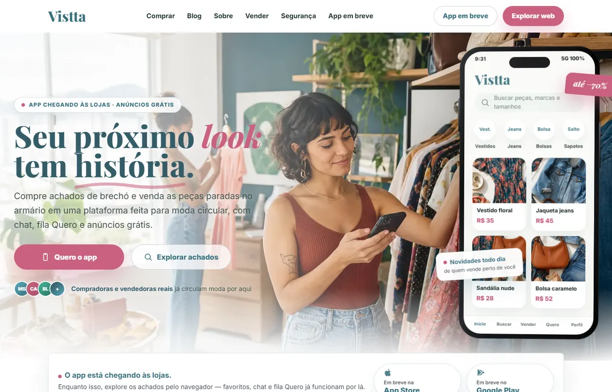
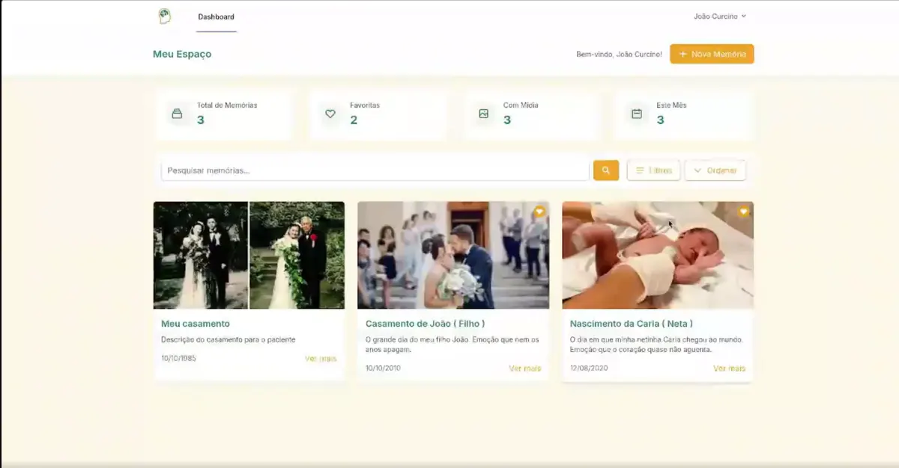
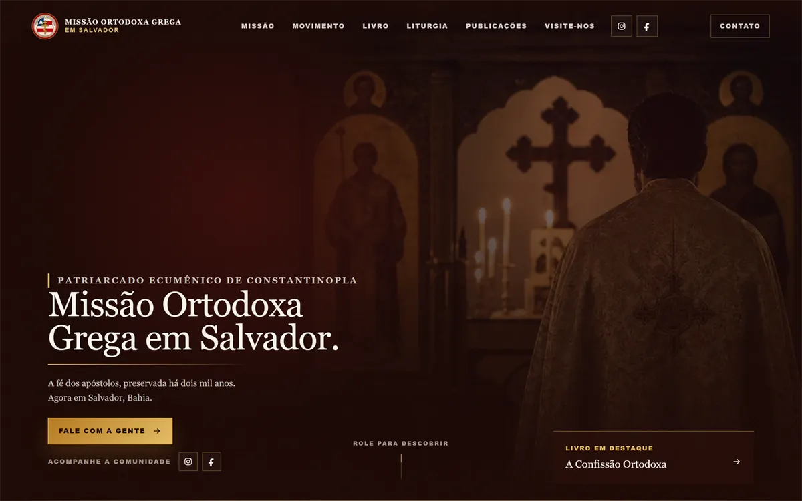

Landing page de venda
Página direta para campanha, tráfego pago ou lançamento, com CTA forte e narrativa que converte.
- Copy e estrutura de conversão
- WhatsApp, formulário ou agenda
- Entrega rápida e responsiva
Desenvolvedor full-stack focado em backend. Transformo ideia em produto: sites que vendem, plataformas que escalam e integrações que automatizam o que antes era manual.
Pacotes claros para quem precisa de presença digital forte — e capacidade técnica para quando a operação pedir mais.
Página direta para campanha, tráfego pago ou lançamento, com CTA forte e narrativa que converte.
Presença profissional para gerar confiança, explicar serviços e receber contatos qualificados.
Plataformas, APIs e integrações (pagamentos, assinatura digital) para reduzir trabalho manual e escalar a operação.
Trabalho real no ar — de site institucional a marketplace fullstack.

Site para empresa de auditoria, RH e TI com comunicação profissional, páginas de serviço, blog e caminho direto para contato comercial.

Marketplace de moda circular construído de ponta a ponta: anúncios gratuitos, chat, favoritos e fila de interessadas. Backend NestJS, web Next.js e app Flutter.


Landing page e blog para uma missão religiosa em Salvador, com design autoral, SEO técnico (schema, sitemap, Open Graph) e páginas de conteúdo estáticas geradas a partir de Markdown.
De experimentos públicos a sistemas privados em produção — onde testo ideias e resolvo problemas reais.
Sistema em Laravel que dispara avisos e cobranças de títulos via WhatsApp de forma automática — agendamento, integração com API de mensagens e controle de envios em produção.
Bot de Telegram com IA para geração e curadoria de conteúdo — conecta modelos de linguagem ao fluxo de mensagens para automatizar a produção.
Worker em Node.js para enviar lembretes agendados via WhatsApp com Twilio e MongoDB.
Lista de tarefas com lembretes no browser, feita em Next.js + Tailwind.
Press kit de DJ — House, Prog Dark e Psytrance. Site rápido e visualmente marcante.
API Node.js/Express com autenticação, posts e upload de imagens para causa cívica.
Motor em Python para análise de risco e retorno de carteiras da B3 — prova de capacidade de construir lógica de negócio, não só interface.
Backend é minha base, mas entrego de ponta a ponta — do banco ao deploy.
Backend & Dados
Frontend & Mobile
DevOps & Ferramentas
Workflow IA
Domínios em que sou forte
Boleto, PIX e cartão — APIs bancárias processando +5.000 pagamentos/mês em produção.
Fluxos de assinatura de documentos integrados a sistemas de gestão.
Rotinas, relatórios gerenciais e integrações que eliminam trabalho manual.
Otimização de consultas e relatórios que aceleram a tomada de decisão.
Da freela ao desenvolvimento de sistemas críticos em produção. Aprendizado constante, entrega real.
Formação
Bacharelado em Engenharia de Software
UNIFACS · 2023–2027
Técnico em Desenvolvimento de Sistemas
SENAI · 2023–2025
INFOCRAFT · Salvador, BA
INFOCRAFT · Salvador, BA
Autônomo · Remoto
Sou João Curcino, desenvolvedor full-stack focado em backend. Minha diferença é unir execução técnica com visão de negócio: não entrego só uma tela bonita, entrego uma solução pensada para explicar sua oferta, gerar confiança e funcionar em produção.
Trabalho desde 2022 com APIs REST, integrações financeiras e sistemas web escaláveis. Isso permite começar com um site bem feito e evoluir para sistemas robustos quando sua operação pedir mais.
3+
Anos codando
5k+
Pagamentos/mês em produção
15+
Projetos publicados
A maior parte dos clientes vai chegar pelo celular.
Estrutura mais preparada para buscadores.
Visual profissional, textos claros e prova de trabalho.
WhatsApp, formulários, pagamentos, APIs e automações.
Me chama no WhatsApp com uma ideia geral do que você precisa. Eu te ajudo a entender o melhor caminho: landing page, site institucional ou sistema sob medida.
Para agilizar, envie: